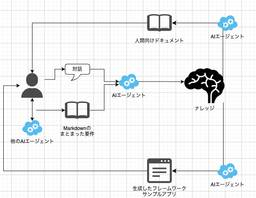

フューチャー技術ブログ
https://future-architect.github.io/
フューチャーの開発者による公式技術ブログです。業務で利用している技術を幅広く紹介します。
フィード

OSS監視ツールを活用してWebアプリのボトルネックを可視化してみた
フューチャー技術ブログ
ISUCON10予選のアプリを題材に、Prometheus・Grafana・OpenTelemetryといったオープンソースの監視ツールでWebアプリのボトルネックを可視化してみました。エンドポイント別の遅延と、ミドルウェアをまたぐトレーシングの2段構えで見ていきます。
17時間前
AI時代のデータガバナンスを再考 1
1
フューチャー技術ブログ
AIエージェント導入を見据えたデータガバナンスの論点を3つに絞って再考します。構造化データと非構造データのどちらから整備するか、AIに使わせる側の統制、権限をどう広げるかを扱います。
2日前

スケジューリングをAIに任せてみたら、仕事の進め方ごと変わった話
フューチャー技術ブログ
スケジュールを組ませるためにタスクの文脈をMarkdownへ溜めていったら、スケジュール以外の仕事もAIに渡せるようになっていた、という話です。Obsidian と Claude Code だけで組んだ仕組みと、そこに至るまでに何が足りず何を足したのかを書いています。
3日前
ラジカルAIプログラミング実践編 — 1人PoCから考えるマルチエージェント開発の「統治と委任」
フューチャー技術ブログ
マルチエージェントの開発基盤を1名・約1週間で作り、その基盤自体の開発に使ってみました。企画・実行・レビュー・トリアージを別セッションに分けた構成、ドッグフーディング中に起きた事故、そこから見えた「統治と委任」の設計について書いています。
6日前

AIを使ったナレッジ中心設計を試してみた 118
フューチャー技術ブログ
自分史上最高のウェブアプリケーションフレームワークを作るにあたって、設計知識を小さなファイルの集合としてAIに持たせる「ナレッジ中心設計」を試しました。OKFとの違い、ワークフロー、複数リポジトリでエージェント同士に議論させた話まで書いています。
7日前
夏休み自由研究連載 2026
フューチャー技術ブログ
夏休み自由研究連載 2026 のインデックス記事です。夏休みの自由研究らしく、自分の興味がある技術を調査したり研究したりする、技術ブログのリレー企画です。
7日前
Google Cloud Next 2026を通して感じたAIエージェント活用の現在地
フューチャー技術ブログ
Google Cloud Next 2026に参加してきました。混沌としてきたGemini Enterprise周りの名称整理、秘書型と独立型という2種類のエージェント、そしてデータ基盤のAIエージェントReady化について、現地で感じた温度感を整理します。
8日前

AWS Certified Foundational 2資格 合格体験記 - 逆走する資格RTA
フューチャー技術ブログ
AWS認定のFoundationalレベル2資格に一発合格しました。上位レベルの学習でどこまで足りたかに加えて、8月に公開された認定の上位・下位関係のブログから、更新の仕組みと受験順によるバウチャーの効き方を整理します。
9日前
AWS Certified Associate 3資格 合格体験記 - Specialty・Professional取得後に5日で3連取
フューチャー技術ブログ
Specialty・Professionalの取得後に、AWS認定のAssociateレベル3資格を5日間で連続受験し、すべて一発合格しました。上位資格の学習でカバーできた範囲とできなかった範囲を、試験ごとの学習量とあわせて整理します。
10日前
AWS Certified DevOps Engineer - Professional 合格体験記 - 「知らない」を潰す問題演習で一発合格
フューチャー技術ブログ
2026年7月27日に「AWS Certified DevOps Engineer - Professional」を受験し、833点/1000点（合格ラインは750点）で一発合格しました。Skill BuilderとUdemyの演習問題で「知らない」を潰した学習方法と、覚え直した内容をまとめます。
13日前
AI Dev Day 2026に参加しました！
フューチャー技術ブログ
2026年7月24日に開催されたAI Dev Day 2026に参加しました。一日を通して繰り返し出てきたのは、新しい語彙ではなくコストと信頼でした。キーノートから各セッションまで、聞いてきた内容をレポートします。
14日前
テクニカルライティングガイドラインを公開しました
フューチャー技術ブログ
フューチャー社内の有志メンバーでテクニカルライティングガイドラインを作成し公開しました。作成の背景と全体像、そして内容の一部を抜粋して紹介します。
15日前
AIエージェント開発でつまずく原因は技術ではなく体制であることも多い
フューチャー技術ブログ
AIエージェントの検証（PoC）は動いたのに、全社展開や本番利用となった途端に動きが悪くなる。その原因の多くは技術選定ではなく体制側にあります。役割分担、評価・監視・ガバナンスの仕組み、段階的な立ち上げの3点で整理します。
16日前
SQLフォーマッター uroborosql-fmt がNeovim/Eclipseなど各種エディタに対応 ― 言語サーバーとβ版リンターを公開しました🎉
フューチャー技術ブログ
SQLフォーマッター uroborosql-fmt の言語サーバーとβ版リンターをリリースしました。Neovim / Emacs / Eclipse など各種エディタでのセットアップ方法と、SQLコーディング規約に基づくリンターのルールを紹介します。
17日前
Japan Datadog User Group Meetup#20@札幌に登壇しました
フューチャー技術ブログ
Japan Datadog User Group Meetup#20@札幌で「AI時代のひとりSREのすすめ」というテーマで登壇しました。Datadog MCP Serverを軸に、運用もチーム連携もコンプラ対応もひとりで進められるようになった経緯を話しました。
20日前
AWS Certified Solutions Architect - Professional 合格体験記 - 最難関を攻めて一発合格
フューチャー技術ブログ
Cyber Security Innovation Group、FutureVulsチームの棚井です。2026年7月25日に「AWS Certified Solutions Architect - Professional 」を受験し、812点/1000点（合格ラインは750点）で一発合格しました。
21日前
Go 1.27リリース連載：ポスト量子暗号
フューチャー技術ブログ
Go 1.27でcrypto/mldsaが追加されました。ポスト量子暗号のデジタル署名ML-DSAの実装です。Goのポスト量子暗号への対応はGo 1.24から始まっています。鍵交換のML-KEMが入り、TLSの既定で有効になりました。
1ヶ月前
Go 1.27の構造体リテラルのキー拡張で、埋め込みフィールドの初期化が楽になった
フューチャー技術ブログ
Go 1.27の言語仕様の変更は3つあります。そのうちの1つである「構造体リテラルのキー拡張」を紹介します。簡単に言うと、埋め込み構造体のフィールドを、構造体リテラルのキーに直接書けるようになりました。
1ヶ月前
Go 1.27リリース連載：goroutineleakプロファイルでリークを検出して修正する
フューチャー技術ブログ
goroutineリーク検出プロファイル goroutineleak が、Go 1.27で正式機能になりました。正式化後の使い方と、検出したリークをどう修正するかを中心に紹介します。
1ヶ月前
Go 1.27 リリース連載：ジェネリクスメソッド (generic methods)
フューチャー技術ブログ
Go 1.27 より導入されるジェネリックメソッド (generic methods)について紹介します。
1ヶ月前